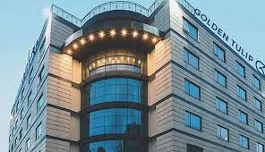
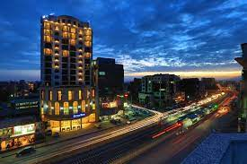
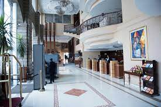
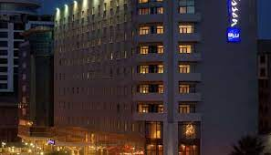
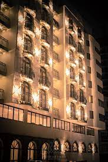
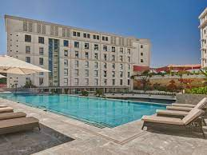

|

Golden Tulip
Bole, Addis Ababa
Golden Tulip Addis Ababa is situated in Addis Ababa.
Guests can enjoy the on-site bar, and meals at the
on-site restaurant. Free private parking is available
on site. Golden Tulip Addis Ababa
|

Getfam Hotel
Bole, Addis Ababa
Getfam Hotel offers accommodation in Addis Ababa.
The hotel has a terrace and views of the mountains,
and guests can enjoy a meal at the restaurant.
Free WiFi is offered throughout the property
|
|
|

Capital Hotel and Spa
Yeka, Addis Ababa
Featuring a fitness centre and a spa & wellness centre,
Capital Hotel and Spa is situated in Addis Ababa,
1.5 km from UN Conference Centre Addis Ababa.
Guests at the 5-star property
|

Radisson Blu Hotel
Kirkos, Addis Ababa
Radisson Blu Hotel, Addis Ababa offers accommodation
in Addis Ababa. The hotel has a terrace, spa centre,
bar and guests can enjoy a meal at the restaurant
|
|
|

The Grand Palace Hotel
kirkos, Addis Ababa
Located in Addis Ababa, 400 metres from UNECA
Conference Center, The Grand Palace Hotel
provides accommodation with a restaurant,
free private parking, a fitness centre and a bar.
|

Hyatt Regency
kirkos, Addis Ababa
Set in Addis Ababa, less than 1 km from UNECA Conference Center,
Hyatt Regency Addis Ababa offers accommodation with a restaurant,
free private parking, an outdoor swimming pool and a fitness
|
|